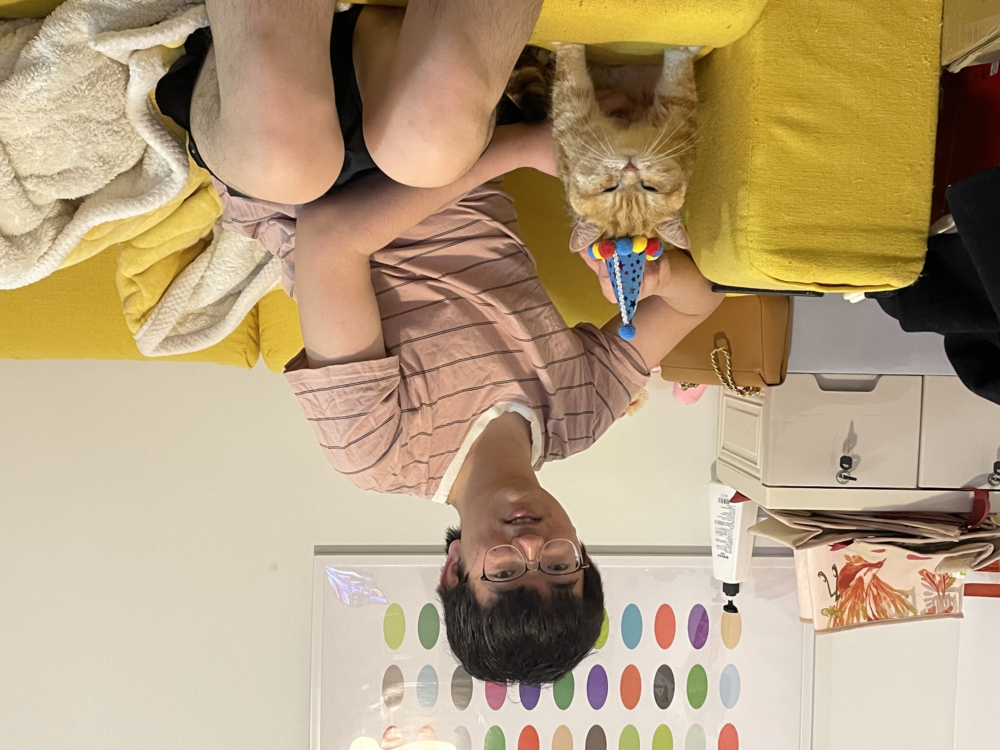

Researcher | AI Photography R&D
vivo Imaging Department
Email guanshanyan@vivo.com
Location Shanghai, China

I am a researcher specializing in computer vision and artificial intelligence. Currently, I work at vivo Imaging Department, focusing on AI Photography R&D.
I received my Ph.D. from Shanghai Jiao Tong University in 2024, advised by Prof. Xiaokang Yang and Prof. Yunbo Wang. I earned my B.S. from Xidian University in 2017.
Industry Experience: I have interned at leading tech companies including Tencent XR, SenseTime, Tencent YouTu Lab, and miHoYo, working on computer vision and AI technologies across gaming, autonomous systems, and mobile applications.
Research Focus: My research spans both academic and industrial applications. During my Ph.D., I focused on machine understanding of real-world dynamics and motion analysis. Currently, I concentrate on high-resolution image generation, video synthesis, and world models for mobile camera systems.
NeurIPS 2025
arXiv 2025
ICCV 2025 Spotlight
NeurIPS 2022
IEEE T-PAMI 2022
ECCV 2022